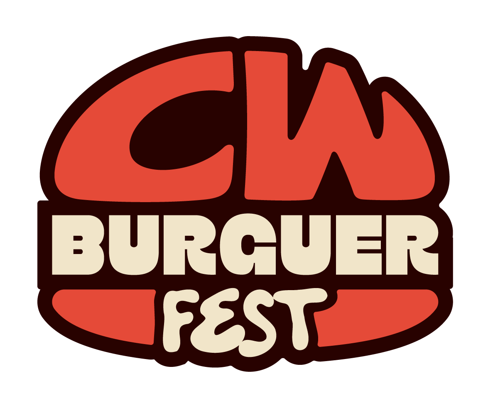
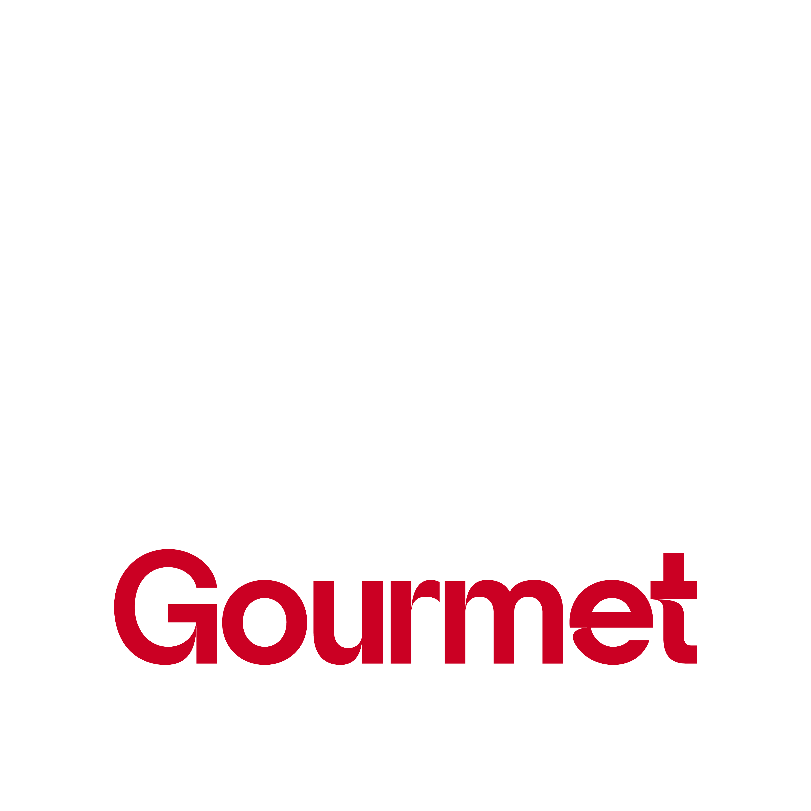
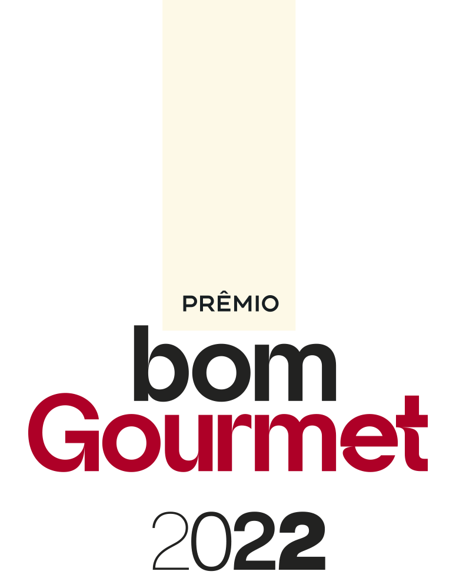

Leve o seu restaurante para os projetos que movimentam a gastronomia do Sul.
Festival, Prêmio, circuitos, FoodCo. e Casa Bom Gourmet: oito projetos ao longo do ano para o seu restaurante vender mais. E para a sua marca chegar a quem decide.
Para você: quero viver a cidade →Escolha onde entrarOs projetos do Bom Gourmet
Calendário 2027Quando cada projeto acontece
| Projeto | Jan | Fev | Mar | Abr | Mai | Jun | Jul | Ago | Set | Out | Nov | Dez |
|---|---|---|---|---|---|---|---|---|---|---|---|---|
| Circuito de VerãoCuritiba e RM | ||||||||||||
| Festival Bom Gourmet7 praças no PR | ||||||||||||
| CW Burguer FestCuritiba | ||||||||||||
| Prêmio Bom GourmetPR e RS | ||||||||||||
| Vinada CulturalPraça Afonso Botelho | ||||||||||||
| Circuito de InvernoCuritiba e RM | ||||||||||||
| FoodCo. ExperienceCasa Bom Gourmet | ||||||||||||
| Casa Bom GourmetCuritiba | ||||||||||||
Meses do mídia kit 2026 repetidos para 2027. Datas exatas a confirmar pela equipe.
Para o seu negócioGestão, mercado e o que está mudando no food service
Ver tudo de negóciosFim da escala 6x1: detalhes, na prática, que o empresário precisa saber
Ler matéria → Coluna · Negócio no PratoRestaurantes em hotéis: estratégia, eficiência operacional e rentabilidade por trás da experiência gastronômica
Cadu LopesColuna Negócio no Prato Coluna · Branding à MesaCasa cheia, caixa vazio
Patricia ZanotelliColuna Branding à Mesa Abrasel · MercadoEm preparativos para 2027, Café de Negócios da Abrasel desta terça-feira (22) abordou os impactos da Reforma Tributária na gastronomia
Ler matéria →Colunistas de negócios e operação
Nomes, colunas e títulos reais do site atual. Fotos de exemplo. Ordem de quem publicou por último.
CasesO que aconteceu com quem entrou

A maionese que virou ingrediente oficial do festival do hambúrguer
Ver o case →
A água servida em todos os encontros da Casa Bom Gourmet
Ver o case →
A marca que entregou o troféu a cada premiado da noite
Ver o case →Cases de exemplo, a partir do que foi citado na reunião. No site final, cada um leva a uma página do case.
Entregas que viraram conteúdoVeja como as marcas aparecem nos projetos
Reels selecionados pela equipe (não os últimos posts). Rodam como vídeo no site final.
Restaurantes
"O Festival virou o mês mais forte do nosso ano. A casa lota e o público volta depois."
"No FoodCo. a gente encontra quem passa pelos mesmos problemas. Voltei com três ideias que já estão rodando."
Marcas
"Alcance qualificado que nenhuma mídia tradicional entrega. O público certo, no momento certo."
Depoimentos de exemplo. Substituir por depoimentos reais, com autorização.
Quem já está com a genteMarcas que fazem parte da nossa história
Trocar os nomes pelos logos oficiais. Borda dourada: marcas em projetos ativos.
Fale com o comercialComo você quer participar?
Sou restaurante e quero participar
Festival, circuitos, Vinada, CW Burguer Fest e FoodCo.: a gente te mostra como entrar e quando. No Prêmio não tem inscrição, quem indica é o público.
Falar pelo WhatsAppQuero patrocinar
Cotas, ativações e conteúdo nos projetos certos para a sua marca chegar ao público e a quem decide.
Falar pelo WhatsApp